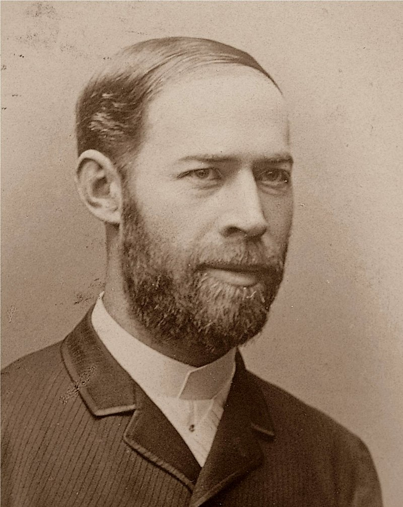

Tabla
Revision de tablas y frecuencias.

La frecuencia —denotada con la letra griega v o con la letra latina f— es el
número de repeticiones por unidad de tiempo de cualquier proceso periódico. El período es
la duración de tiempo de cada evento repetitivo, por lo que el período es el recíproco de la frecuencia.
También se denomina frecuencia temporal, que subraya el contraste con la frecuencia espacial y la
frecuencia angular.
Para calcular la frecuencia de un suceso, se contabilizan un número de ocurrencias de este, teniendo en
cuenta un intervalo temporal, y luego estas repeticiones se dividen por el tiempo transcurrido. Según el
Sistema Internacional (SI), la frecuencia se mide en hercios (Hz), en honor a Heinrich
Rudolf Hertz (Quién es?). Un hercio es la frecuencia de un
suceso o fenómeno repetido por segundo. Así, un fenómeno con una frecuencia de dos hercios se repite dos
veces por segundo. Esta unidad se llamó originalmente «ciclo por segundo» (cps).
Otras unidades para indicar frecuencias son revoluciones por minuto (rpm o r/min según la notación del
SI); las pulsaciones del corazón se miden en latidos por minuto (lat/min) y el tempo musical se mide en
«pulsos por minuto» (bpm, del inglés «beats per minute»).
Período y frecuencia
Por conveniencia, las ondas más largas y lentas, como las ondas superficiales del océano, tienden a describirse por el período de la onda en lugar de la frecuencia. Las ondas cortas y rápidas, como el audio y la radio, suelen describirse por su frecuencia en lugar de por su período.
Heinrich Rudolf Hertz

Nacido en Hamburgo, Confederación Germánica, 22 de febrero de 1857 y fallece en Bonn, Imperio
alemán, 1 de enero de 1894.
Fue un físico alemán que descubrió el efecto fotoeléctrico, la propagación de las ondas
electromagnéticas y las formas para producirlas y detectarlas. La unidad de medida de la frecuencia,
el hercio («Hertz», en la mayoría de los idiomas), lleva ese nombre en su honor.
Descargar imagen
Descargar Info en PDF
Enviar mail